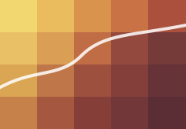
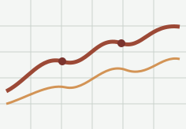
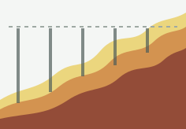

August 2026
New research publication
Add a concise update about a newly published paper, preprint, or accepted manuscript.
View publications →
I am a hydroclimate scientist studying variability and extremes in the terrestrial water cycle, with a focus on precipitation, drought, floods, and regional water availability.
My research combines observations, reanalysis, and regional and global climate-model simulations to understand the physical processes that shape hydroclimate variability and change.
Add a concise update about a newly published paper, preprint, or accepted manuscript.
View publications →Add the title of a recent conference presentation, invited talk, seminar, or workshop.
Research context →Add a short note about a new collaboration, project, field campaign, or funded activity.
View projects →Add a note about a dataset, analysis workflow, code release, or other research resource.
Project details →I work across climate dynamics and hydrology to understand variability in the water cycle and the emergence of hydroclimate extremes.
Large-scale and regional variability in precipitation, moisture, runoff, and water availability across timescales.
Physical mechanisms, persistence, and predictability of high-impact hydroclimate events.
Connections between atmospheric circulation, land–atmosphere processes, and regional hydroclimate anomalies.
Recent papers and scholarly work spanning hydroclimate variability, extremes, and regional climate modeling.

A. Dixit, Coauthor Name. Journal Name. Replace this sample citation with your paper details.

A. Dixit, Coauthor Name. Journal Name. Replace this sample citation with your paper details.

A. Dixit et al. Journal Name. Replace this sample citation with your paper details.